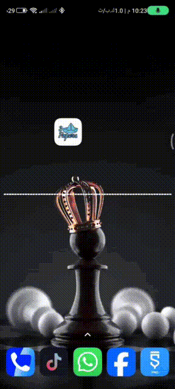

حول جهازك إلى لوحة فنية متحركة. صانع خلفيات حية (Live Wallpapers) يجمع بين تخصيص الفيديو والتفاعل الموسيقي (Visualizer).
تحميل التطبيق (APK)
اختيار أي فيديو من جهازك ليكون خلفية متحركة.
تفاعل الخلفية "صورة ثابتة" مع إيقاع الموسيقى في جهازك.